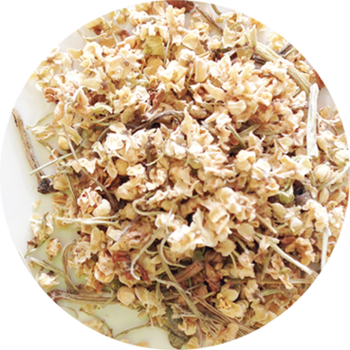

インフルエンザの特効薬
血液循環を刺激して発汗を促し、身体の中の毒素を排出。
くしゃみや鼻水、悪寒といった風邪のひきはじめや
花粉症の症状を軽減します。
| 和名 | セイヨウニワトコ |
| 学名 | Sambucus nigra |
| 科名 | スイカズラ科 |
| ティに使う部分 | 花 |
|---|---|
| 作用 | 発汗、収れん、うっ血除去、鎮痙、解毒、利尿、弛緩、去痰、消炎、抗ウイルス |
| 主要成分 | 精油、トリテルペン、フラボノイド、粘液質、タンニン、ペクチン、糖類 |
| 注意点 | キク科アレルギーの人は注意 |
| 利用法 | 化粧水、うがい薬として使う |
| 香り | フルーティーな香り |
|---|---|
| 味 | 甘み
 酸味
酸味
苦味
渋み

|
| ブレンドおすすめ | 冷え性を改善するブレンド エルダーフラワー＋ジンジャー＋ヤロウ |